a multimedia playlist — images, words, sounds, and code üåÉüìùüéπüíª (pt. 1)
my music taste has changed a lot since high school so this probably will too..
not super responsive :( works best on desktop (might require fullscreen mode)
scroll ⬇️
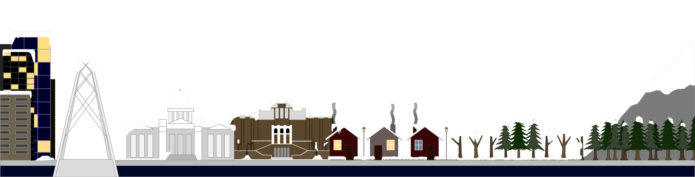
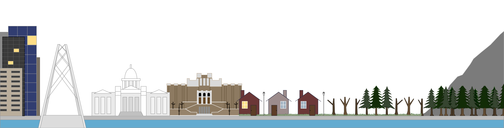
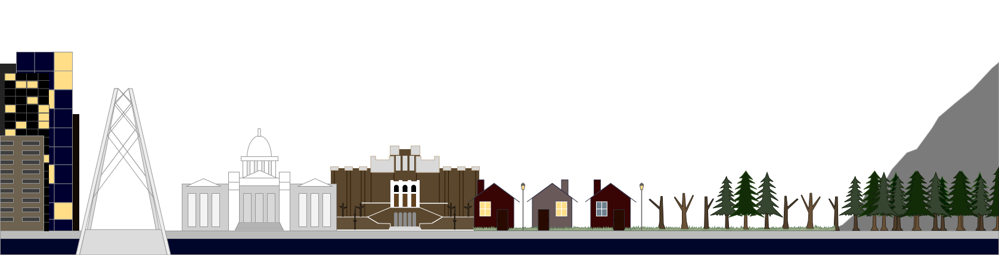
"don't be afraid of
the cat without fur"
"shout it out, what you want for the world: money, honor, beauty, everything you want. play with a mask to hide the truth; people cheat each other, right?"
"if you consider it no big deal,
then it's no big deal." My Mister
let's laugh, loudly and refreshingly...
because the exciting tomorrow will come soon."
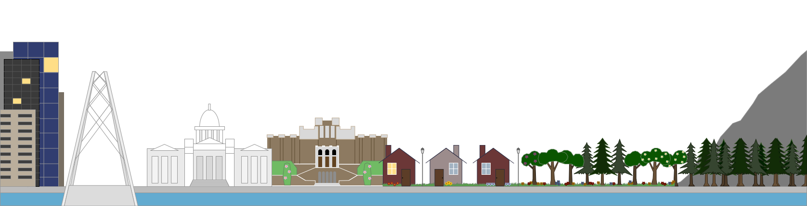
"hi there
say hello without being extra
let's start without introductions"
"i got this,
i'm truly fine.
i think i know myself a little now."
"take a moment and ask yourself if this is how we fall apart.
but it's not / it's ok / we've got nothing to fear."
"it's okay to stop for a while."
"...when all that's left
is immaterial,

 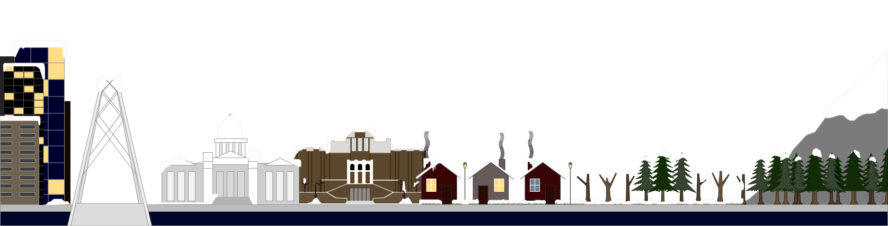
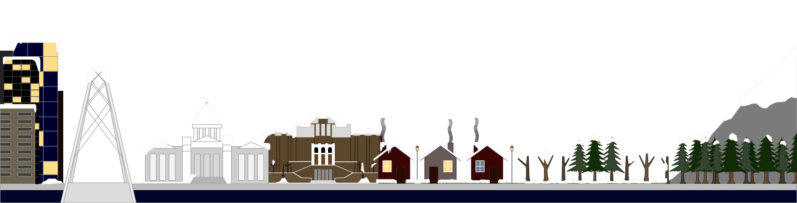

 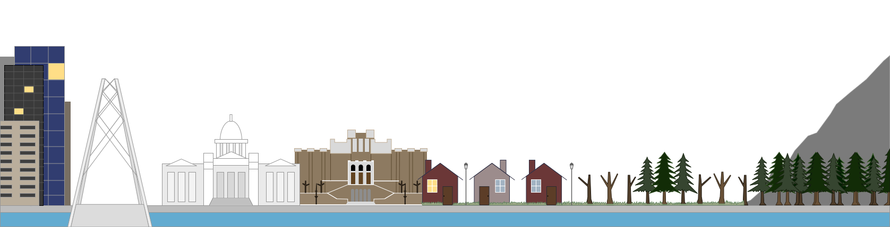
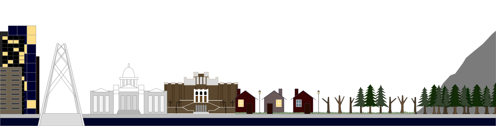
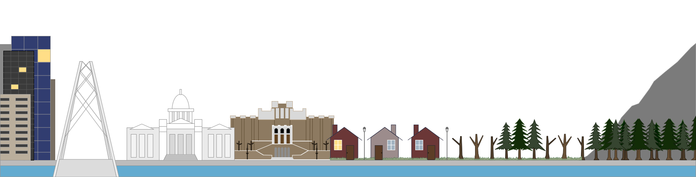
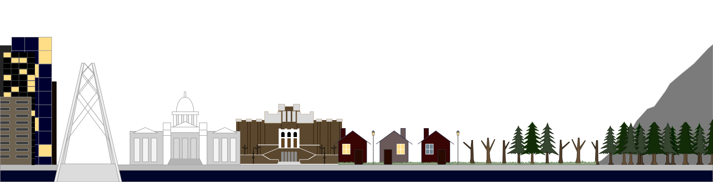


 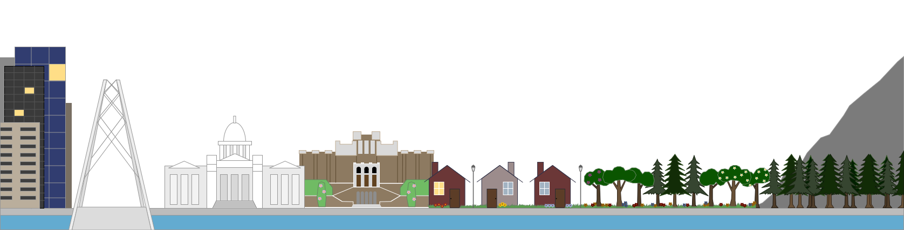
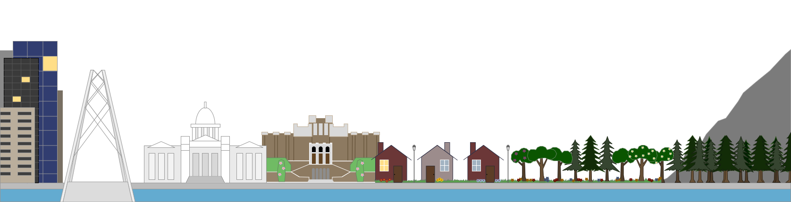